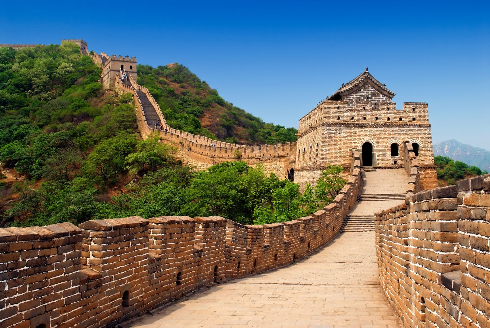

La Gran Muralla China es una de las obras de ingeniería más impresionantes de la historia y un símbolo del ingenio, la perseverancia y la riqueza cultural del pueblo chino. Se extiende a lo largo de montañas, desiertos y llanuras del norte de China, formando una extensa red de murallas, fortificaciones y torres de vigilancia construidas durante diferentes dinastías.
Su construcción comenzó alrededor del siglo VII a. C. y continuó durante más de dos mil años, alcanzando su mayor desarrollo bajo la dinastía Ming (1368-1644). Su propósito principal era proteger el territorio chino de invasiones provenientes del norte, además de facilitar el control del comercio y las comunicaciones a lo largo de sus fronteras.
Con una longitud aproximada de 21.196 kilómetros, la Gran Muralla es considerada la estructura defensiva más extensa jamás construida por el ser humano. En 1987 fue declarada Patrimonio de la Humanidad por la UNESCO y, en 2007, fue elegida como una de las Nuevas Siete Maravillas del Mundo, reconocimiento que destaca su extraordinario valor histórico, arquitectónico y cultural.